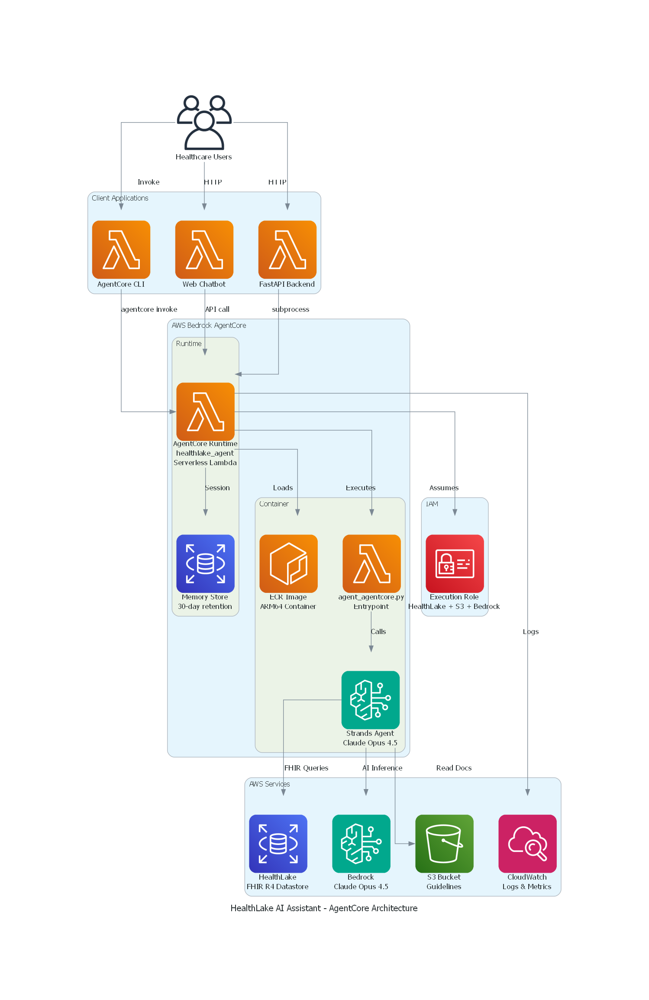

Overview
The HealthLake AI Assistant enables healthcare professionals to query patient records, search clinical data, and access medical guidelines through conversational AI, eliminating the need for technical FHIR expertise.
Key Features
- Natural language queries for FHIR resources (Patients, Conditions, Observations, Medications, etc.)
- Complete patient record retrieval with
$patient-everythingoperation - Clinical document access from S3 with presigned URL generation
- Session-based conversation memory (30-day retention)
- Role-based access control (patient, doctor, nurse, admin)
- Real-time streaming responses with tool execution visibility
Architecture

HealthLake AI Assistant Architecture
The solution uses AWS Bedrock AgentCore with a serverless Lambda runtime, providing:
- Zero infrastructure management
- Automatic scaling
- Built-in observability with CloudWatch
- Cost-effective pay-per-invocation model
Architecture Layers
Client Layer
- AgentCore CLI for command-line invocation
- Web Chatbot for browser-based interaction
- FastAPI Backend for REST API integration
AgentCore Runtime
- Serverless Lambda execution (ARM64)
- 30-day session memory retention
- Container image stored in Amazon ECR
- IAM-based access control
Data & AI Layer
- AWS HealthLake for FHIR R4 clinical data
- Amazon Bedrock with Claude Opus 4.5
- Amazon S3 for clinical documents
- CloudWatch for logging and metrics
For detailed architecture documentation, see docs/ARCHITECTURE.md.
Prerequisites
- AWS CLI configured with appropriate credentials
- AWS Bedrock AgentCore CLI installed:
pip install bedrock-agentcore - Docker installed and running
- Python 3.11 or higher
- AWS HealthLake datastore with FHIR R4 data
Quick Start
1. Configure Environment
Create a .env file:
# AWS Configuration
AWS_PROFILE=your-aws-profile
AWS_REGION=us-west-2
# HealthLake Configuration
HEALTHLAKE_DATASTORE_ID=your-datastore-id
# Bedrock Configuration
BEDROCK_MODEL_ID=anthropic.claude-opus-4-5-20250514
BEDROCK_TEMPERATURE=0.7
BEDROCK_MAX_TOKENS=4096
# S3 Configuration (optional)
S3_BUCKET_NAME=your-s3-bucket-name2. Install Dependencies
pip install -r requirements.txt3. Configure AgentCore
agentcore configure --entrypoint agent_agentcore.py --name healthlake_agent4. Deploy to AWS
agentcore deploy --agent healthlake_agent5. Add IAM Permissions
Run the provided script or manually add permissions:
.\add_healthlake_permissions.ps16. Test the Agent
agentcore invoke '{"prompt": "What is the HealthLake datastore information?"}' --agent healthlake_agentProject Structure
healthlake-agent/
├── agent.py # Strands agent with 7 tools
├── agent_agentcore.py # AgentCore entrypoint wrapper
├── config.py # Configuration management
├── requirements.txt # Python dependencies
├── Dockerfile # AgentCore container image
├── .bedrock_agentcore.yaml # AgentCore configuration
│
├── models/
│ ├── session.py # SessionContext and UserRole
│ ├── agent_response.py # Response models
│ └── interaction_log.py # Logging models
│
├── utils/
│ ├── auth_helpers.py # Authorization validation
│ ├── retry_handler.py # Retry logic for AWS calls
│ └── fhir_code_translator.py # FHIR code translation
│
├── prompts/
│ └── healthcare_assistant_prompt.py # System prompt
│
├── scripts/
│ ├── deploy_agentcore.ps1 # Deployment script
│ ├── configure_agent.ps1 # Configuration script
│ ├── add_healthlake_permissions.ps1 # IAM permissions
│ └── test_agentcore_agent.ps1 # Testing script
│
├── docs/
│ ├── ARCHITECTURE.md # Architecture documentation
│ ├── DEPLOYMENT.md # Deployment guide
│ └── QUICKSTART.md # Quick reference
│
└── examples/
├── chatbot_agentcore.html # Web chatbot interface
└── api.py # FastAPI integration exampleUsage Examples
CLI Invocation
Basic query
agentcore invoke '{"prompt": "Search for patients with diabetes"}' --agent healthlake_agentWith session context
agentcore invoke '{"prompt": "Show me patient details", "context": {"user_id": "doctor-001", "user_role": "doctor"}}' --agent healthlake_agentWith session ID for conversation continuity
agentcore invoke '{"prompt": "Tell me more about the first patient", "session_id": "session-123"}' --agent healthlake_agentWeb Chatbot
Open examples/chatbot_agentcore.html in a browser for an interactive interface.
API Integration
See examples/api.py for FastAPI integration example.
Available Tools
The agent includes 7 specialized tools:
FHIR Tools
get_datastore_info- Retrieve datastore metadatasearch_fhir_resources- Search for FHIR resources with filtersread_fhir_resource- Read complete resource by IDpatient_everything- Get all resources for a patient
S3 Tools
list_s3_documents- List documents in S3 bucketread_s3_document- Read document content (up to 50MB)generate_presigned_url- Create secure download link
Monitoring
View Logs
aws logs tail /aws/bedrock-agentcore/runtimes/healthlake_agent-UNIQUE_ID-DEFAULT --follow --region REGION --profile YOUR_PROFILECheck Agent Status
agentcore status --agent healthlake_agent --verboseCloudWatch Dashboard
Access the GenAI Observability dashboard in AWS Console:
- Navigate to CloudWatch → GenAI Observability → Agent Core
Security
- IAM-based access control with least-privilege permissions
- Role-based authorization at application layer
- Encryption at rest and in transit
- HIPAA-eligible services (HealthLake, Bedrock, S3, Lambda)
- CloudTrail logging for audit compliance
Cost Estimate
Monthly costs for moderate usage (~1,000 queries):
| Component | Cost |
|---|---|
| AgentCore Runtime | ~$0.02 |
| Memory (STM) | ~$0.03 |
| CloudWatch Logs | ~$2.50 |
| ECR Storage | ~$0.20 |
| Bedrock (Claude Opus 4.5) | ~$27.50 |
| Total | ~$30/month |
Troubleshooting
See docs/ARCHITECTURE.md for detailed troubleshooting guide.
License
This project is licensed under the MIT License - see the LICENSE file for details.
Contributing
Contributions are welcome! Please read the contributing guidelines before submitting pull requests.
Support
- AWS Documentation: Refer to AWS Bedrock AgentCore documentation
- CloudWatch Dashboard: Monitor agent performance and costs
- AWS Support: Contact AWS Support for infrastructure issues
✅ Status: Production Ready
Agent Version: 1.0.0 | Last Updated: February 24, 2026